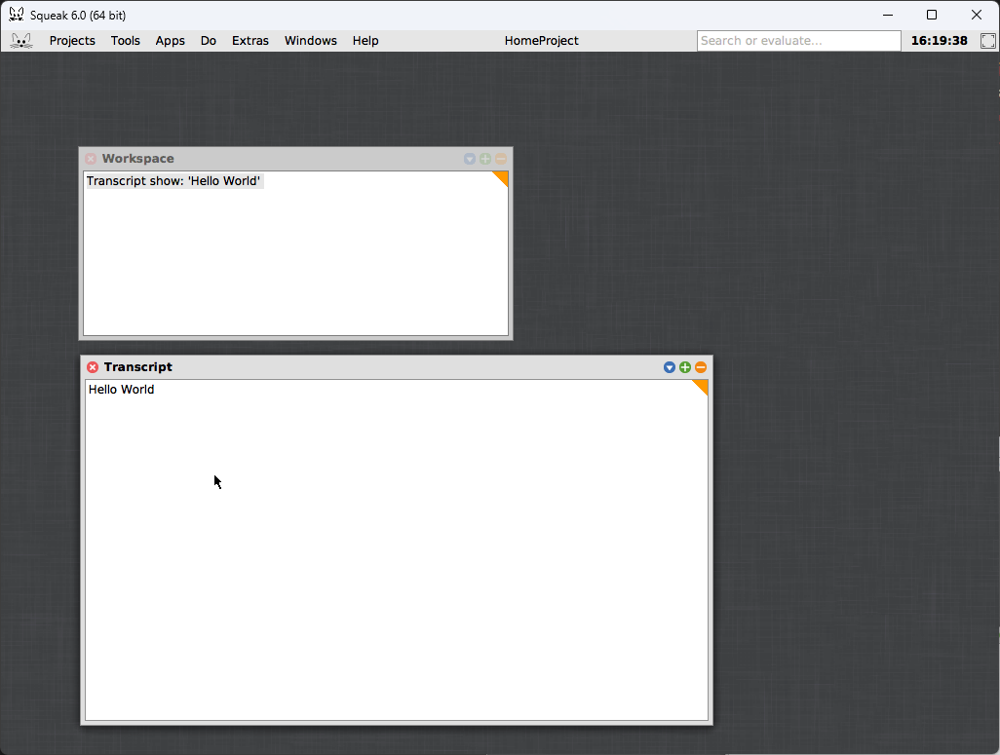
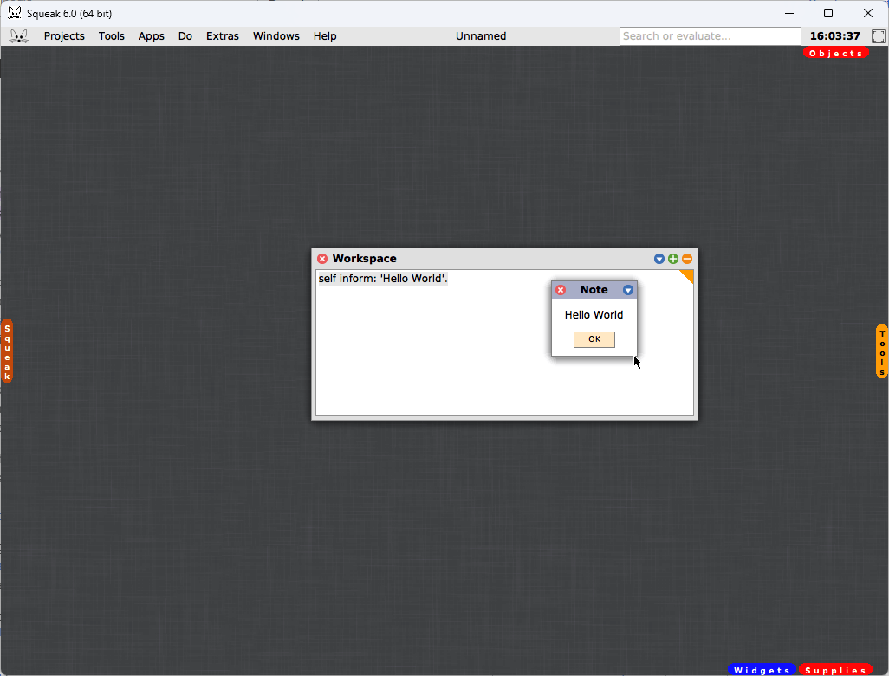
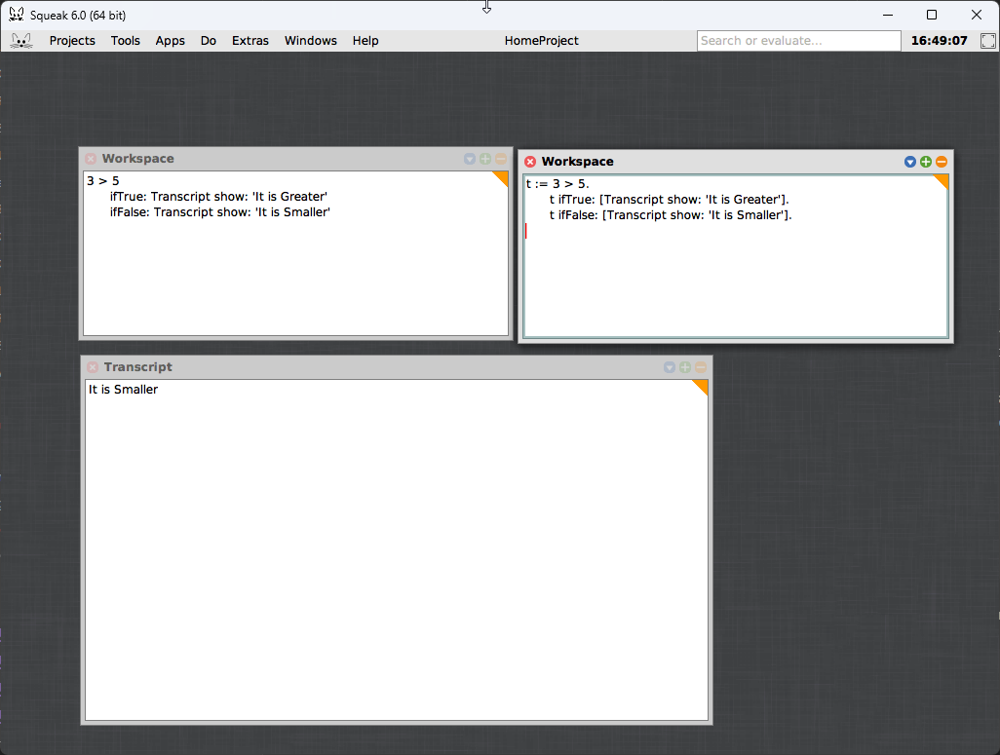
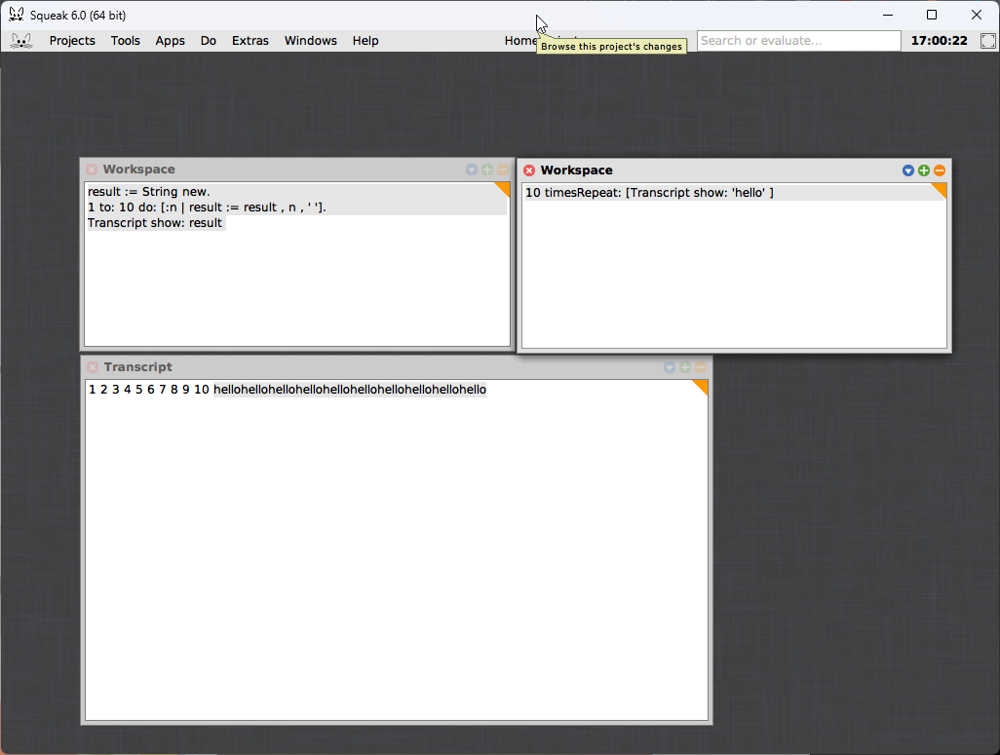

Object oriented
…
Important terms & Concepts
…
Classes & Objects
…
Methods
…
Attributes
…
Getters and Setters
…
Self-referencing
…
- self
- this
Abstract classes
…
- abstract methods
Static/Class Methods
…
Inheritance
…
Purely Object Oriented Languages
Some languages will only allow you to create and interface with objects.
Squeak/Smalltalk
Smalltalk was a language created in the 1970’s. It was one of the first object-oriented languages, and influenced most other object oriented languages that came afterwards. Since then Squeak is the more modern implementation of Smalltalk. Every piece of data in Smalltalk is an object (including the window of your environment). You cannot have functions, only methods! “methods” (attached to objects) are passed “messages” (objects) which carry out operations.
Both are esoteric in how you use them. Your IDE is part of your program, and everything (including the IDE state) is saved to a file. I am using squeak in the examples and as a tip if you want to test the examples you see below, left-click inside the window and select Worspace, this is where you enter your code. From there left click again in the empty space and open Transcript. Type your code in the workspace window, highlight it and hit alt/option + d to run it, or hit alt/option + p to print the result inline.
For example here is hello world in squeak can be done a few ways:
Transcript show: 'Hello World'.
Transcript is an object representing the transcript window. We are then using the show method with the string object 'Hello World'. Alternatively we could also do:
self inform: 'Hello World'.
self is the object representing the window you type your code into, and inform is a method that creates a new dialogue box, which takes in a string message to show.
This leaves us with some interesting consequences. For example there are no conditional statements, instead you create a Boolean object as the result of an expression, then check against it’s ifTrue and ifFalse values:
3 > 5
ifTrue: Transcript show: 'It is Greater'
ifFalse: Transcript show: 'It is Smaller'
It’s more clear if we assign the Boolean to a variable result:
t := 3 > 5.
t ifTrue: [Transcript show: 'It is Greater'].
t ifFalse: [Transcript show: 'It is Smaller'].
Because of this design there are a few ways to do loops that also feel a bit odd. For example in this case the integer 10 is getting a timesRepeat signal, which then executes the statements in [] that many times:
10 timesRepeat: [Transcript show: 'hello' ]So we would get hellohellohellohellohellohellohellohellohellohello as output. Alternatively we could send a to signal, which we can then send a message of another integer object, with a do signal in order to execute the statement in []1:
result := String new.
1 to: 10 do: [:n | result := result , n , ' '].
Transcript show: result 
This code assigns n the current value of the loop, then combines it to the result string with a space. This follows a similar convention to set-builder notation or list comprehensions but the resulting data is thrown away after being serialized into result
Java
Another purely object-oriented language is Java. Created in 1995 as a general purpose language, largely used for enterprise applications today. I have included several examples for code, to run these I would highly recommend downloading an openJDK version. You can choose between amazon’s version (Corretto)) or adoptJDK. You can also install it via ninite (which is what I do). Once installed just add the examples to a .java file and then compile using javac *.java then run the program with the entrypoint name (explained later), if it’s a class called Main in a file called Main.java then you would run javac *.java then run java Main.
With Java you explicitly create a “singleton” (a class with only 1 instance), which is an object representing your program. Here is the “hello world” in Java:
class HelloWorld{
public static void main(String []args){
System.out.println("Hello World");
}
};This code would live inside a file called HelloWorld.java, we would then compile and run it. From there Java will create an instance of the HelloWorld class and run it’s main method. These singletons are always the entrypoint (where a program runs from) in a java program.
Though it’s not strictly enforced most java programs will have you create a single class per file, and usually the class name and file name will be the same. Your entrypoint file will then use your other files to do things. For example consider this file (Greeter.java):
class Greeter{
private String name;
public Greeter(String name) {
this.name = name;
}
public void greet(){
System.out.println("Hello " + this.name);
}
}We can then create a file in the same directory called Main.java, and use the class:
public class Main {
public static void main(String[] args) {
Greeter me = new Greeter("Kieran");
me.greet(); // Prints "Hello Kieran"
}
}Java also supports abstract classes, class methods, private/public and other OO features.
Python
…
Javascript
…
Critiques
The primary critiques of object oriented programming lie in the abstraction, in particular the hierarchical abstraction presented by inheritance. Because classes can inherit from other classes you can often get unexpected behaviour. Primarily this is because you pull all of the class properties from a previous class, you might pull things you weren’t expecting. This problem is amplified as you add more classes in the inheritance chain. For example:
- mutability: Object oriented code is often very mutable, and because objects can often live for a while
- re-used attributes; Reusing an attribute name to mean something different in another context. For example on the
Animalclass thenamewas the species name, but later the class was used to model a dog owned by someone, and the name field was it’s given name:
class Animal:
def __init__(self, name):
self.name = name
def get_species(self):
return self.name
class Dog(Animal):
def __init__(self, name):
self.name = name
def bork(self):
return "woof"
class Poodle(Dog):
def __init__(self, name):
self.name = name
def prance(self):
return "I'm prancing"
a = Poodle("Jeremy")
if isinstance(a, Animal):
print(f"Species is {a.get_species()}") # Print's Species is JeremyProcedural
…
Functional
…
Additional Resources
- Object oriented
- Fundamental Concepts of Object Oriented Programming (youtube.com)
- Smalltalk
-
Intro to Smalltalk
-
Pharo Smalltalk as Universal Development Platform (youtube.com)
-
Object Oriented Programming With Smalltalk – Objects & Messages (youtube.com)
-
GNU Smalltalk - GNU Project - Free Software Foundation (FSF)
-
- Java
- Intro
- Abstract Classes and Methods in Java Explained in 7 Minutes (youtube.com)
- Static vs Non-Static Variables and Methods In Java - Full Simple Tutorial (youtube.com)
- Final Keyword in Java Full Tutorial - Final Classes, Methods, and Variables (youtube.com)
- Generics In Java - Full Simple Tutorial (youtube.com)
- Critiques & Commentary
- Seminar with Alan Kay on Object Oriented Programming (VPRI 0246) (youtube.com)
- Stop Writing Classes (youtube.com)
- Object Oriented Programming is Good | Prime Reacts - YouTube
- Functional
Referfences
Footnotes
-
https://github.com/hpi-swa-lab/SqueakByExample-english/releases/download/6.0/SBE-6.0.pdf page 72 (56 in top-left numbering) ↩